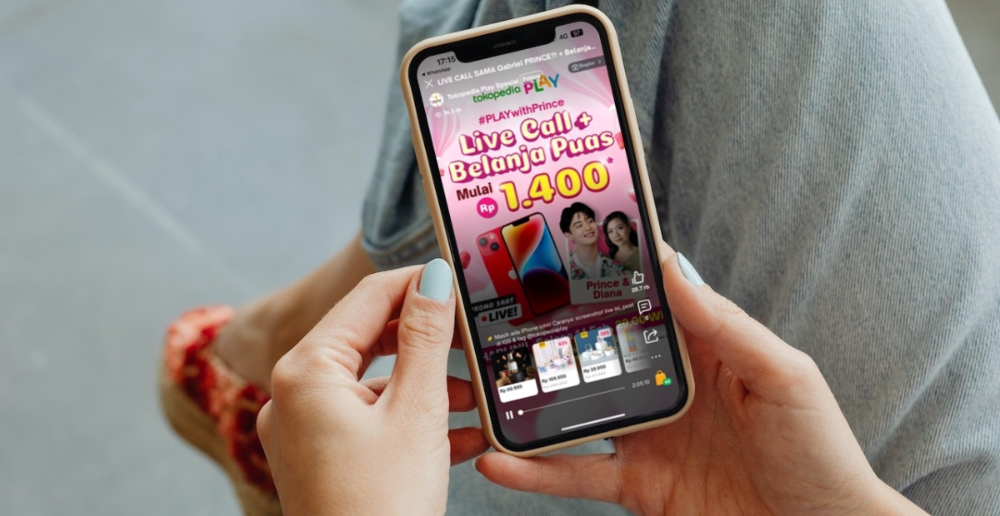

Tokopedia Rekap Tren Belanja Online Kuartal III 2023:
Transaksi Groceries Melesat
04 October 2023

Jakarta, 14 September 2023 - Belanja online masih menjadi pilihan masyarakat untuk memenuhi berbagai
kebutuhan pascapandemi. Hal ini sejalan dengan sebuah laporan yang menyebutkan bahwa 82% masyarakat
Indonesia memilih berbelanja berbagai produk kebutuhan lewat platform e-commerce.* Tingginya animo
masyarakat tersebut juga tercermin dari data tren belanja online di Tokopedia sepanjang kuartal III
2023.
Kepala Divisi Corporate Affairs Tokopedia, Antonia Adega mengatakan, “Beberapa kategori produk yang
paling laris di Tokopedia selama kuartal III 2023, antara lain Fesyen, Otomotif, Elektronik, Rumah
Tangga dan Kebutuhan Sehari-hari atau Groceries (seperti Makanan dan Minuman, Kesehatan serta
Perawatan Tubuh).” Tokopedia pun mengungkap tren belanja online sepanjang kuartal III 2023
dibandingkan dengan kuartal II 2023.
Intip tren belanja online kuartal III 2023 dan promo Tokopedia supaya makin hemat
“Pada kategori produk Fesyen di Tokopedia, pakaian adat, seragam koki dan long john menjadi beberapa
produk terlaris, dengan rata-rata peningkatan transaksi hampir 1,5 kali lipat. Untuk mengakomodasi
tingginya permintaan masyarakat akan produk fesyen wanita, pria, maupun muslim atau modest wear,
Tokopedia mengadakan kampanye, seperti Women in Style dan Galeri Fashion Pria dengan harga mulai
Rp50.000 dan cashback hingga Rp500.000,” ujar Antonia.
Di sisi lain, pada kategori produk Otomotif, beberapa produk yang paling banyak dibeli masyarakat
lewat Tokopedia, yaitu mobil, motor dan kunci helm, dengan rata-rata peningkatan transaksi hampir
1,5 kali lipat. “Masyarakat bisa mendapatkan berbagai produk otomotif melalui Tokopedia Garage
dengan diskon hingga 90%,” ungkap Antonia.
Di kategori produk Elektronik, beberapa produk terlaris di Tokopedia, antara lain monitor komputer,
optical drive dan perangkat membaca buku digital (e-reader), dengan rata-rata peningkatan transaksi
hampir 2 kali lipat.
Tingginya tren belanja online e-reader selaras dengan data Perpustakaan Nasional yang menyebutkan
tingkat kegemaran membaca masyarakat Indonesia naik dengan rata-rata nasional sebesar 63,8 poin.***
Tokopedia pun menghadirkan Mega Electrodeals untuk mempermudah masyarakat mendapatkan produk
elektronik seperti e-reader dengan flash sale hingga Rp1 juta.
“Selain itu, pada kategori produk Rumah Tangga di Tokopedia, kemasan makanan dan minuman (seperti
food paper bag, box kardus makanan dan paper rice bowl), dekorasi (seperti slinger, lampu pohon
Natal dan pohon Natal) serta kotak surat menjadi sejumlah produk terlaris, dengan rata-rata
peningkatan transaksi lebih dari 3,5 kali lipat,” kata Antonia.
“Data itu menunjukkan kemasan ramah lingkungan untuk makanan dan minuman kian diminati masyarakat.
Untuk terus mengajak pembeli, penjual dan mitra strategis lain menggencarkan aksi menjaga
lingkungan, Tokopedia menghadirkan gerakan Tokopedia Hijau,” jelas Antonia. Hal tersebut sejalan
dengan salah satu komitmen Tiga Nol GoTo, yaitu Nol Sampah.
Antonia juga menjelaskan, “Pada kategori produk Groceries di Tokopedia, obat mual dan pencernaan,
foot spray dan cuka apel menjadi sejumlah produk yang paling laris, dengan rata-rata peningkatan
transaksi lebih dari 10,5 kali lipat.”
“Untuk mempermudah masyarakat mengakses produk kebutuhan sehari-hari atau groceries-seperti makanan
dan minuman, produk kesehatan serta perawatan tubuh-Tokopedia menyelenggarakan berbagai kampanye,”
kata Antonia. Misalnya, Tokopedia NYAM! yang berisi berbagai produk makanan dan minuman dengan flash
sale mulai dari Rp10.000; Tokopedia Beauty yang menyediakan berbagai produk perawatan tubuh, juga
dengan flash sale mulai dari Rp10.000; dan Tokopedia Zona Sehat yang menghadirkan berbagai pilihan
produk kesehatan dengan flash sale hingga 90%.
Saat ini, di Tokopedia telah ada lebih dari 14 juta penjual, dimana hampir 100% pelaku UMKM. Di sisi
lain, masyarakat di 99% kecamatan di Indonesia bisa mengakses lebih dari 1,8 miliar produk terdaftar
dengan harga transparan melalui Tokopedia.
“Untuk terus meningkatkan daya saing pelaku UMKM di seluruh wilayah di Indonesia agar punya
kesempatan yang sama dalam menciptakan peluang bisnis, sekaligus mempermudah pembeli mendapatkan
produk kebutuhan yang lebih beragam dengan lebih cepat dan efisien, Tokopedia senantiasa
menggencarkan inisiatif Hyperlocal,” jelas Antonia.
Antonia menambahkan, “Hyperlocal Tokopedia yang menerapkan teknologi geo-tagging memiliki berbagai
manifestasi. Salah satunya, Kumpulan Toko Pilihan (KTP), halaman kurasi produk penjual terdekat dari
lokasi pembeli. Ada pula Dilayani Tokopedia, layanan pemenuhan pesanan yang memungkinkan penjual
menitipkan produk di gudang-gudang pintar Tokopedia para wilayah dengan permintaan tinggi.”